Corpo Docente
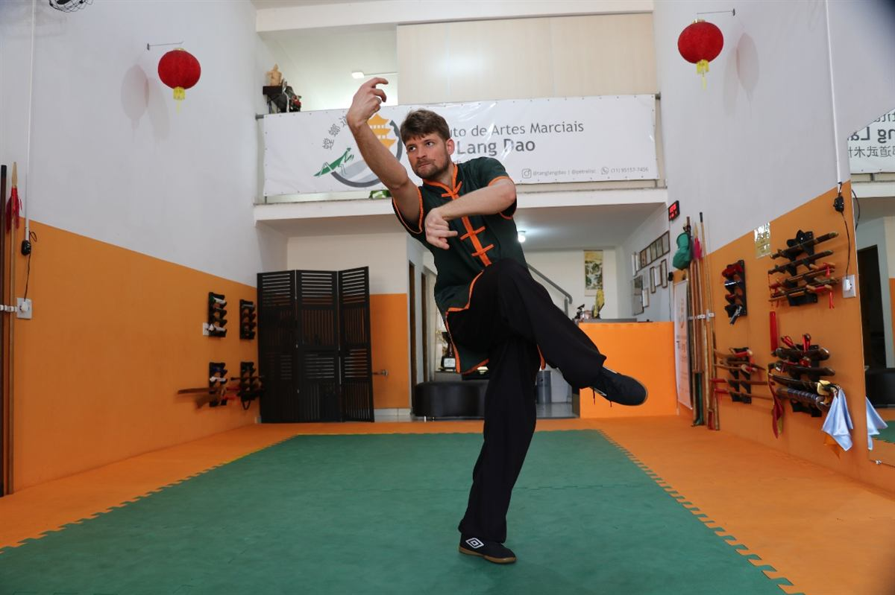
Shifu Caio Petrelis
Fundador do Instituto e professor da unidade de Taipas/SP
Ingressou no Kung Fu aos 15 anos de idade e, após passar por grandes perdas e adversidades em sua vida familiar e pessoal, enxergou nos valores éticos e filosóficos orientais um caminho de vida, dentre eles o Budismo, Confucionismo e Taoísmo.
Visando aprender de forma mais fiel o ensinamento chinês, iniciou seus estudos na língua do mandarim em fevereiro de 2022 na instituição UNESP, consolidando assim seu conhecimento sobre a cultura chinesa.
Atualmente é o professor responsável pela unidade de Taipas e conduz toda a estrutura financeira, administrativa e legal do Instituto Tang Lang Dao.

Laoshi Vinicius David
Tendo iniciado sua jornada marcial aos 10 anos de idade, traz consigo ampla bagagem teórica e prática do Kung Fu estilo Louva-Deus, além de ter experienciado diversas manifestações de lutas, artes marciais e modalidades esportivas de combate, como Muay Thai, Jiu Jitsu, Wing Chun, Aikido, Sanda, Shuai Jiao e Tai Ji Quan.
Sua graduação no estilo Louva-Deus e também sua formação em Educação Física lhe conferem uma sólida base para conduzir treinos com segurança, possuindo ferramentas para garantir um processo ensino-aprendizagem eficaz.
A Fundação
Formado em Engenharia Civil e depois de atuar por mais de oito anos no ramo corporativo, Caio percebe que no cenário brasileiro existe uma ausência de uma estrutura completa de ensino nas artes marciais que permita ao aluno vivenciar a cultura chinesa e poder experimentar diversas frentes do caminho marcial (seja luta/combate, filosofia/cultura, saúde/qualidade de vida, etc.).
Em paralelo, Vinicius enxerga que as artes marciais chinesas enquanto práticas corporais e componentes de movimento deveriam ser abordadas em complemento com os princípios científicos modernos da Educação Física.
Assim, em 2024 os professores iniciam em conjunto um modelo inicial de escola que busca desenvolver e aperfeiçoar um sistema de ensino que possa contemplar o equilíbrio entre os aspectos técnicos/empresariais e os físicos/corporais, o que mais à frente se tornaria o Instituto Tang Lang Dao.
Legado
Após um período de quase 10 anos de muito esforço, dedicação e economia, Caio Petrelis realiza seu grande sonho: inaugurar seu próprio espaço em 17/08/2025.
A abertura foi marcada por uma cerimônia especial com a tradicional Dança do Leão, simbolizando não apenas uma nova conquista, mas também o compromisso de preservar, valorizar e divulgar a cultura chinesa, especialmente o Kung Fu Tradicional.
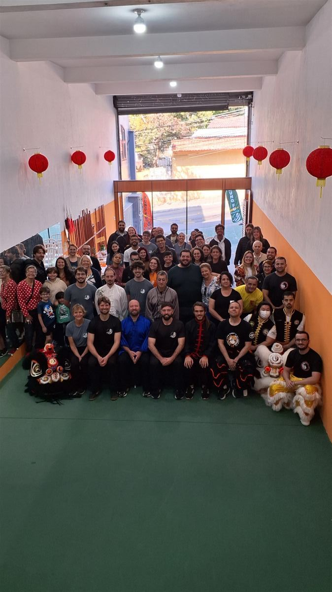
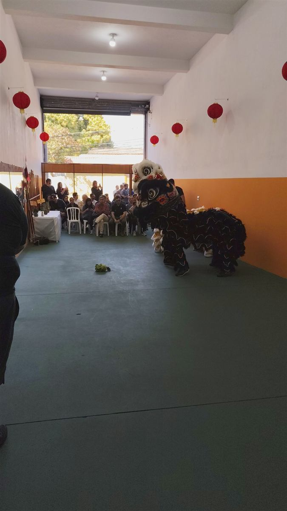
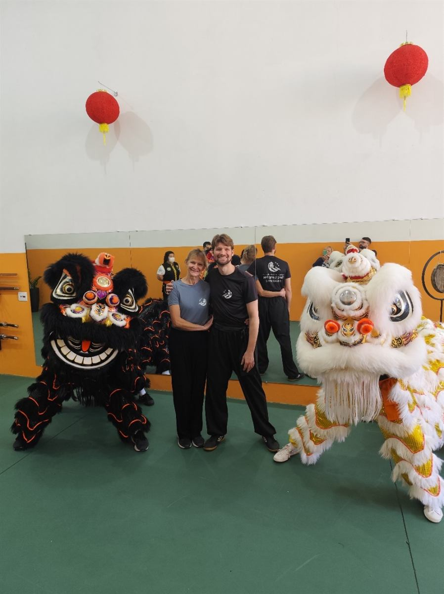
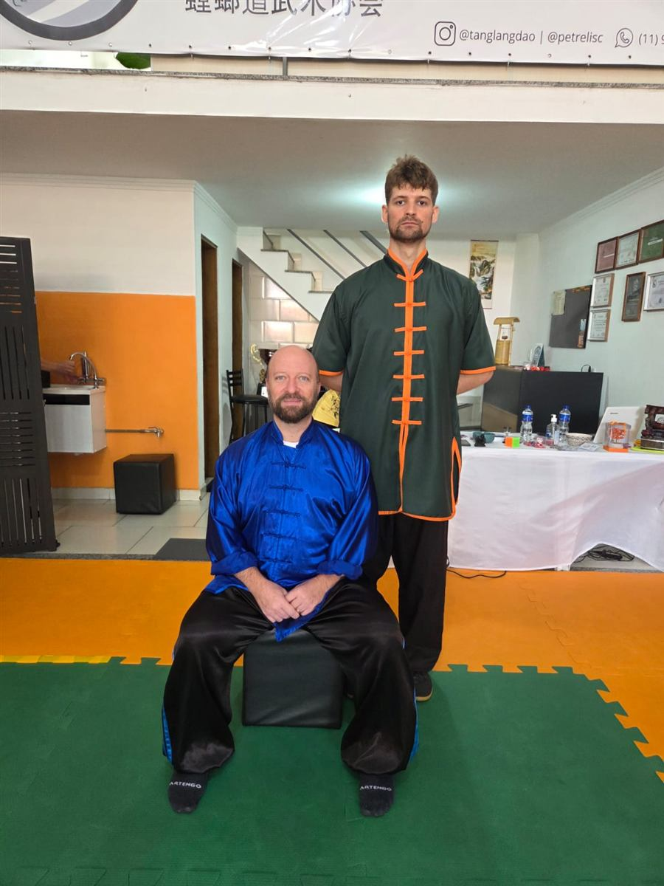
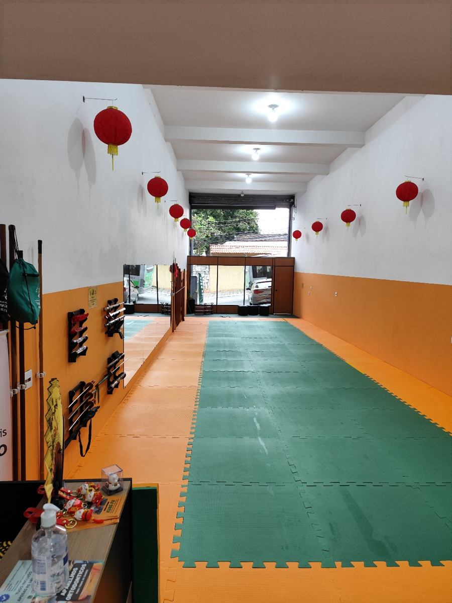

Com muito trabalho e dedicação à divulgação das artes marciais, o Instituto começou a conquistar reconhecimento no meio marcial, sendo convidado por diferentes ligas e organizações para participar de competições e apresentar o trabalho desenvolvido com seus alunos.
Entre elas, destacam-se:
- CIKOBAM Confederação Interestadual de Kung Fu Open Brasil de Artes Marciais, administrada pelo Grão-Mestre Barbosa.
- LNKF Liga Nacional de Kung Fu, administrada pelo Mestre Marcio Silva.
- LBKF Liga Brasileira de Kung Fu, administrada pelo Mestre Paulo Silva.
Somos profundamente gratos aos mestres e organizadores que confiaram em nosso trabalho e abriram essas oportunidades para nossa escola.
Com orgulho, nossos alunos participaram dessas competições e conquistaram lugares no pódio em suas respectivas categorias, levando consigo o resultado de muito treinamento, disciplina e dedicação:
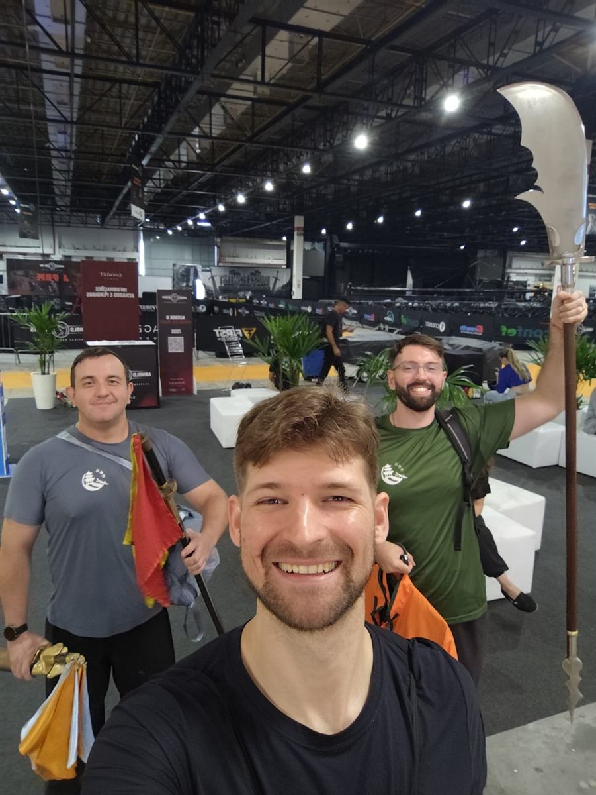
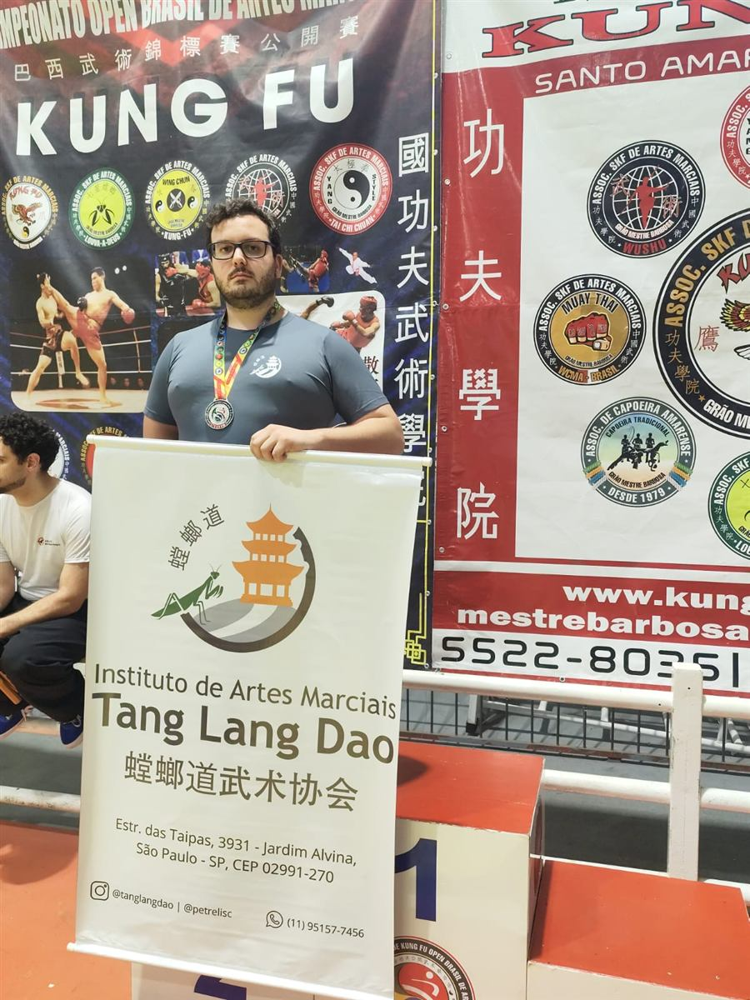
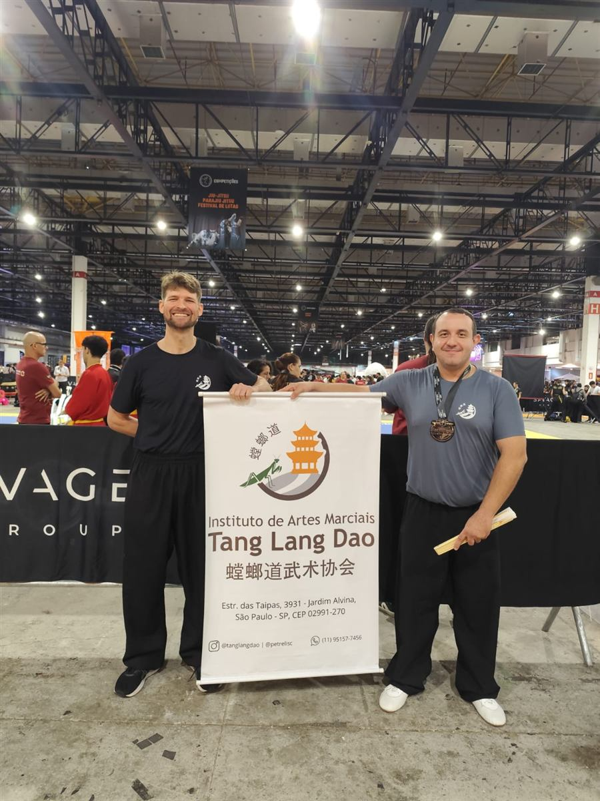
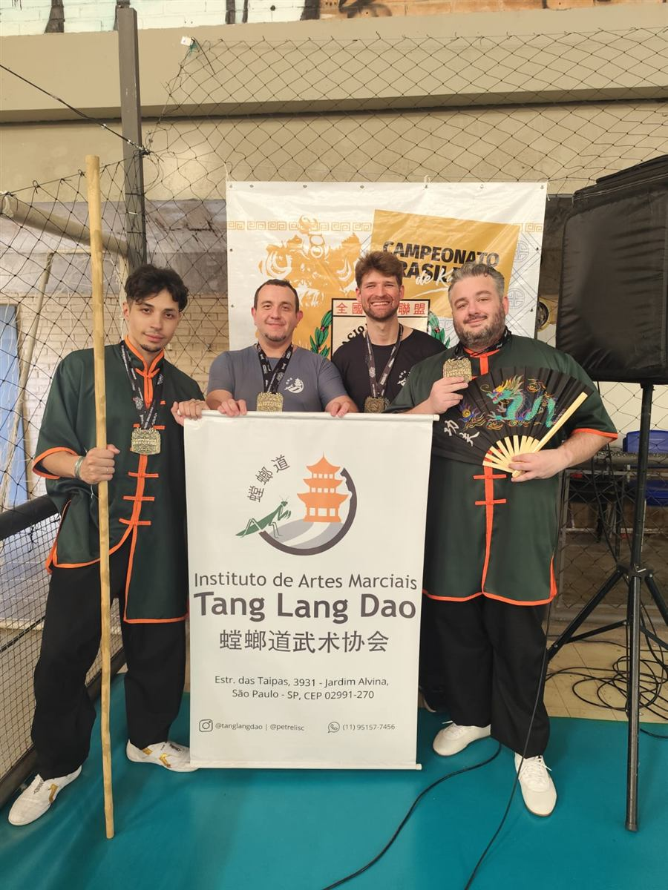
Em 2026, demos mais um passo nessa trajetória. Caio Petrelis iniciou sua participação em competições de estilos internos, estreando na categoria de Tai Chi Chuan e conquistando as primeiras medalhas do Instituto nessa modalidade:
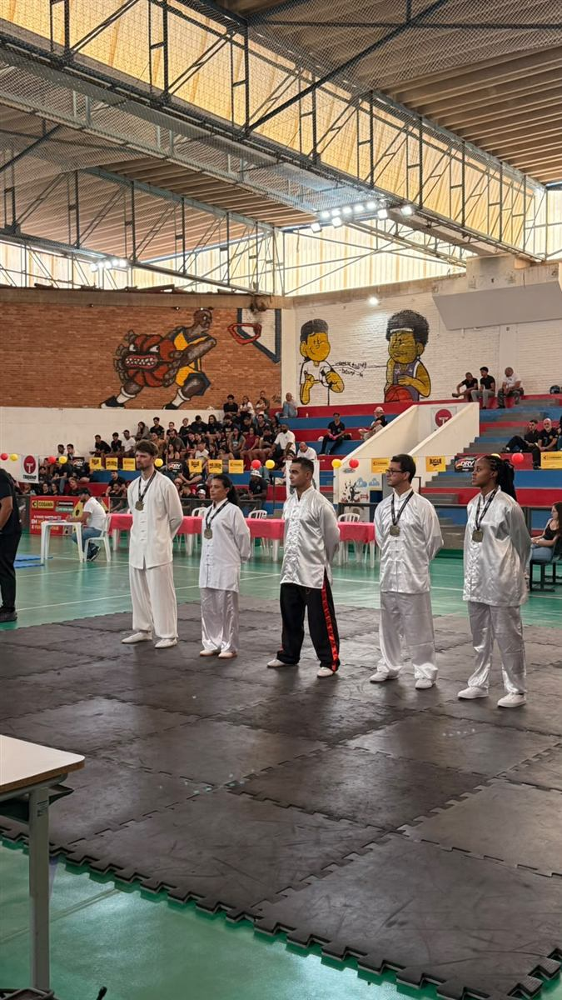
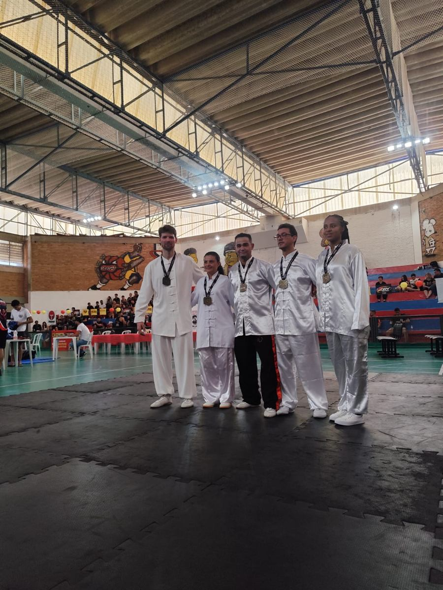
Futuro
Mais do que ensinar técnicas de combate, o Instituto Tang Lang Dao tem como missão preservar e divulgar a cultura chinesa e as artes marciais, levando esse conhecimento a cada vez mais pessoas.
Seguimos com grandes objetivos para o futuro:
Construir uma história
Consolidar o Instituto como uma referência no ensino marcial, formando alunos que busquem superar seus próprios limites e se tornem sua melhor versão a cada dia.
Ampliar nosso alcance
Expandir o ensino presencial e online, levando as artes marciais a pessoas de diferentes regiões do Brasil.
Formar novos professores
Desenvolver instrutores qualificados e comprometidos com a transmissão responsável da arte marcial.
Preservar a tradição
Iniciar um programa de ensino da Dança do Leão, ampliando nossa atuação na divulgação da cultura chinesa.
Nosso objetivo é que essa história vá muito além de uma escola: queremos construir um legado de conhecimento, tradição e transformação por meio das artes marciais.